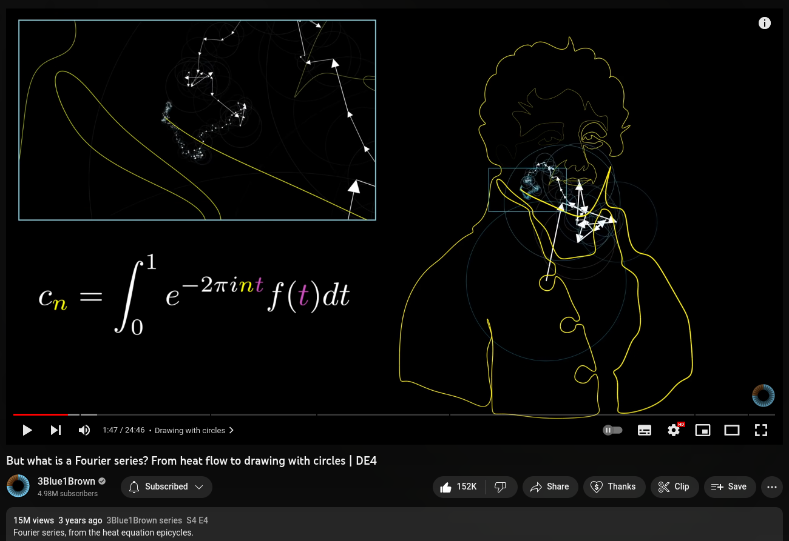
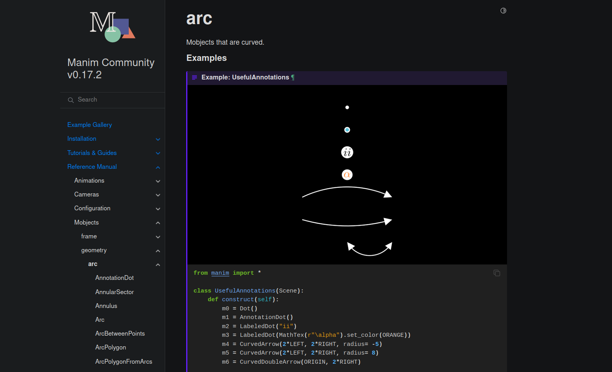
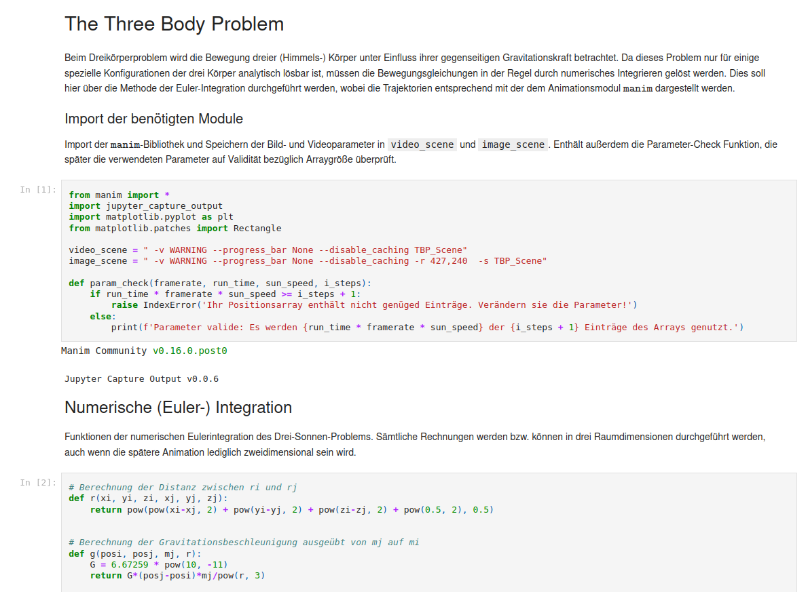

Erstellung von Animationen zur Experimentalphysik I mit
manim
Carlo von Carnap, Jan-Hendrik Müller, Pascal Klein
Unversität Göttingen
07.03.2023
<!-- <div style="font-size: 30px;"> -->  --- ### 3Blue1Brown und *manim* * 2015 von Grant Sandersen ins Leben gerufen * 5 Millionen Abonnenten * Weiterentwicklung von *manim* durch Community --- ### *Manim*-Dokumentation  --- ### Konzeption mathematischer und physikalischer Animation mit *manim* * angeboten von der Physik-Didaktik Göttingen * Animationen zur Schul- und Hochschullehre ```py # Three Body Problem: main animation class ThreeBodyProblem_main_scene(Scene): def construct(self): # Kreieren der 3 Sonnen sun1 = VGroup(Circle(color = WHITE, radius = 0.1, fill_color = WHITE, fill_opacity = 0.5)) sun2 = VGroup(Circle(color = RED, radius = 0.1, fill_color = RED, fill_opacity = 0.5)).shift(r2[:,0]) sun3 = VGroup(Circle(color = YELLOW, radius = 0.1, fill_color = YELLOW, fill_opacity = 0.5)).shift(r3[:,0]) ``` ---  --- ### Python-Bibliothek *manim* * **ma**themematical **anim**ations * Code-basiertes Werkzeug * verträglich mit weiteren mathematischen Modulen * präzise Darstellung physikalischer Inhalte --- ### Nicht-zentraler Stoß <div> <video data-autoplay width="100%" src="assets2/noncentral_DPG.mp4" loop="true"></video> </div> --- ### Nicht-zentraler Stoß <div> <video data-autoplay width="100%" src="assets2/noncentral_DPG2.mp4" loop="true"></video> </div> --- ### Trägheitsmoment <div> <video data-autoplay width="100%" src="assets2/moment_of_inertia_Main.mp4" loop="true"></video> </div> --- ### Wegintegral <div> <video data-autoplay width="100%" src="assets2/line_integration_Main_2A1.mp4" loop="true"></video> </div> <!-- --- ### Carnot-Kreisprozess <div> <video data-autoplay width="100%" src="assets/CarnotCycle.mp4" loop="true"></video> </div> <div style="font-size: 20px; text-align: justify;position: absolute; left: 30px; bottom: -50px; "> Made by: Jan-Hendrik Müller --> <!-- --- ### Wann ist manim geeignet? * Für sehr präzise Animationen * Iteration über Objekte * Zufallsparameter generieren * Anbindung an schon in Python implementierte Physik/Mathe Module * "Latex für Video" --> --- ### Limitierungen von *manim* * 3D-Animationen * viele Objekte <div> <video data-autoplay width="100%" src="assets2/TBP_main_3D_30s_inverted_blackwhite.mp4" loop="true"></video> </div> <!-- ### Limitierungen von *manim* <div> <video data-autoplay width="100%" src="assets2/TBP_main_3D_30s.mp4" loop="true"></video> </div> --- --> <!-- ### Erste Animation ```py class Example(Scene): def construct(self): dot = Dot(color=YELLOW, radius=0.5) self.play(dot.animate.shift(3*RIGHT).scale(2).set_color(BLUE)) ``` <video width="50%" src="assets/ExampleAni.mp4" controls> --> <!-- ### Vielen Dank Fürs Zuhören! -->
Vielen Dank für die Aufmerksamkeit!